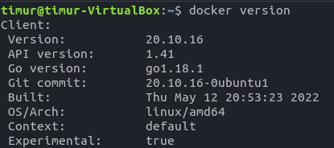
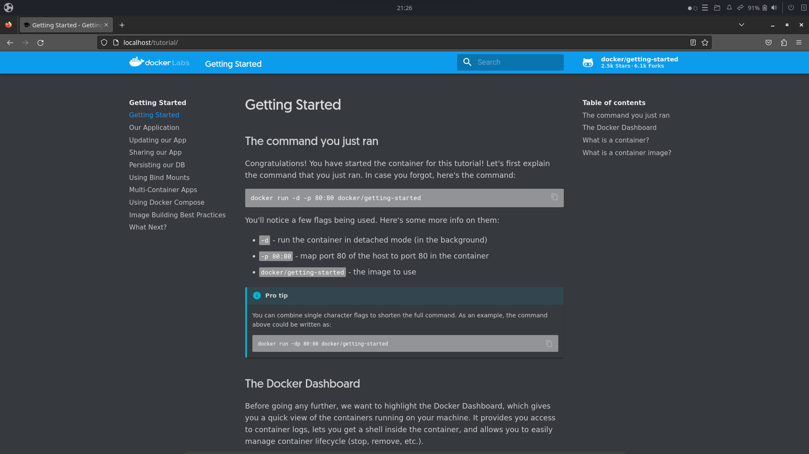
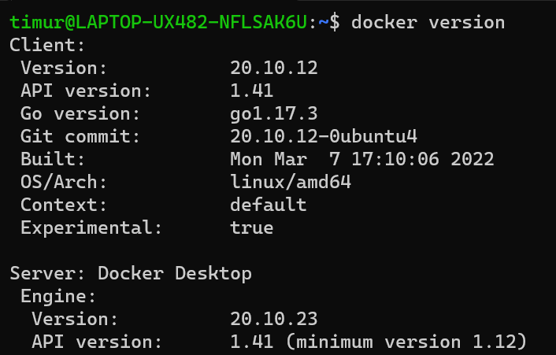
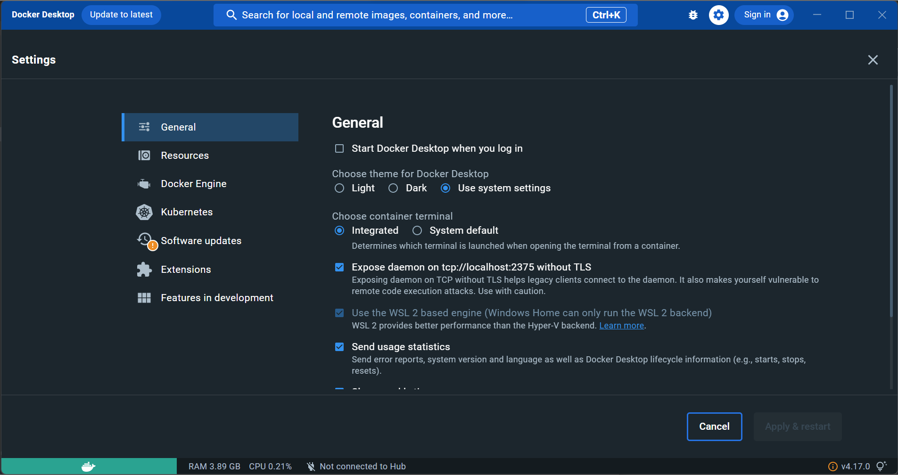
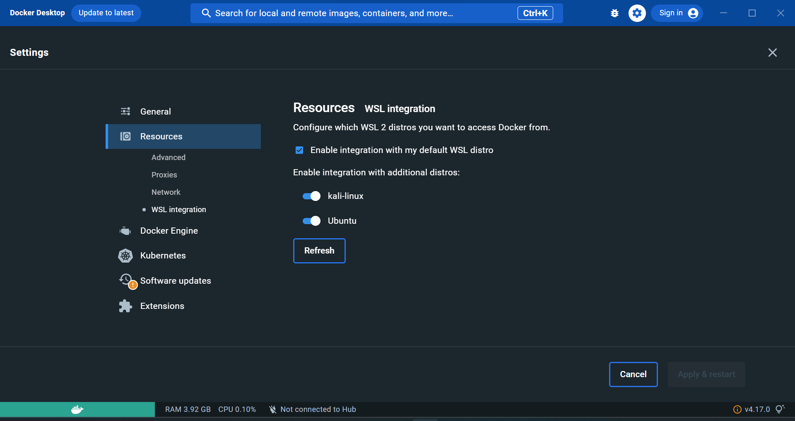
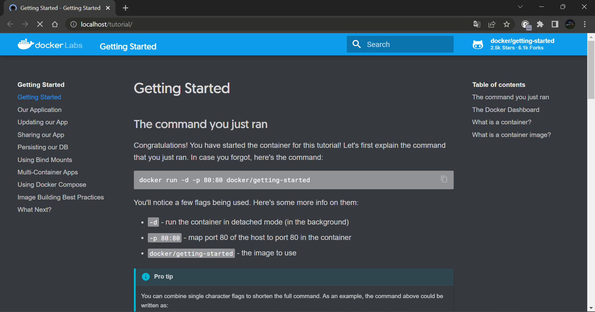

Для этого нам понадобиться:
Доступ в интернет на Linux
Обновленный дистрибутив:
$ sudo apt update && sudo apt upgrade
Вариант 1: У вас полноценный дистрибутив Linux на виртуальной машине или как основная система на ПК.
Начнем:
-
Устанавливаем docker.io через установщик пакетов:
$ sudo apt install docker.io -
Смотрим, что docker установлен:

$ docker version -
Запускаем контейнер с официальным туториалом:
$ sudo docker run -dp 80:80 docker/getting-started
-
Заходим на localhost и видим страницу туториала от Dockerlabs:

Поздравляю, вы запустили свой первый контейнер!
Вариант 2: У вас дистрибутив Linux на Windows Subsystem for Linux (WSL).
Начнем:
-
Ставим вторую версию WSl для дистрибутивов (в командной строке Windows):
wsl --set-version "distro"
Заменяем "distro" на имя дистрибутива. -
Устанавливаем docker.io через установщик пакетов:
$ sudo apt install docker.io -
Смотрим, что docker установлен:

$ docker version -
Устанавливаем Docker Dekstop
Все без Троянов. -
Заходим в настройки.

Расставляем галочки как на картинке. -
Во вкладке Resources -> WSL integration выбираем нужные нам устновленные дистрибутивы WSL 2.
 -
Запускаем контейнер с официальным туториалом:
$ sudo docker run -dp 80:80 docker/getting-started
-
Заходим на localhost и видим страницу туториала от Dockerlabs:

Поздравляю, вы запустили свой первый контейнер!